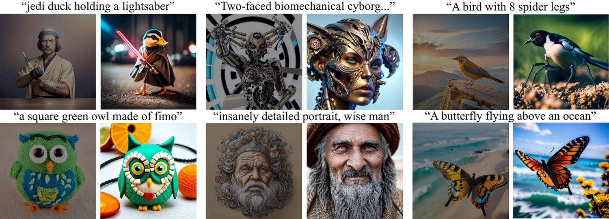
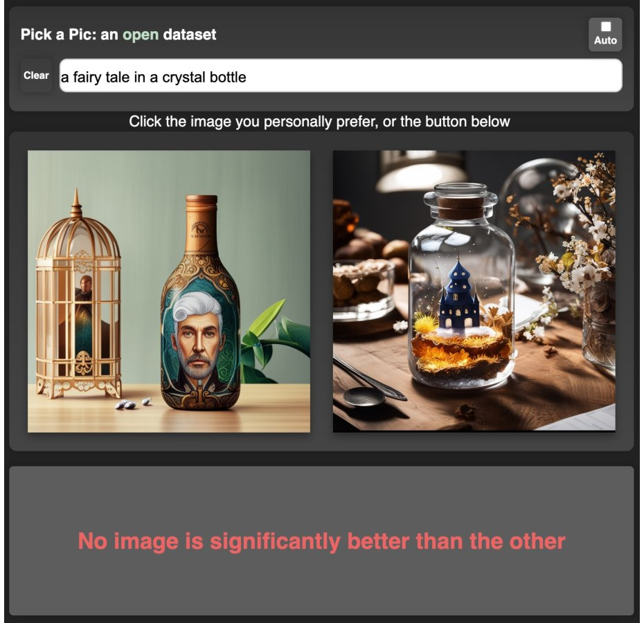
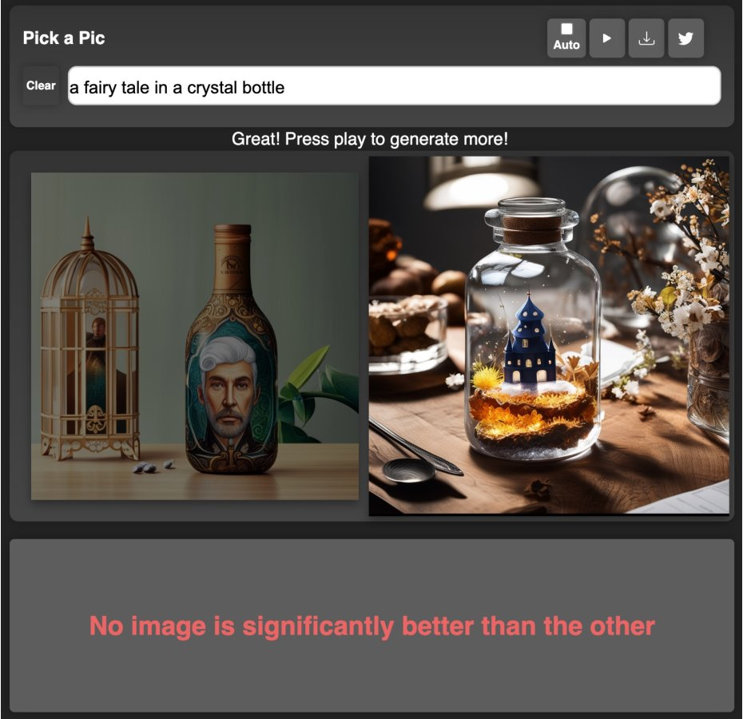
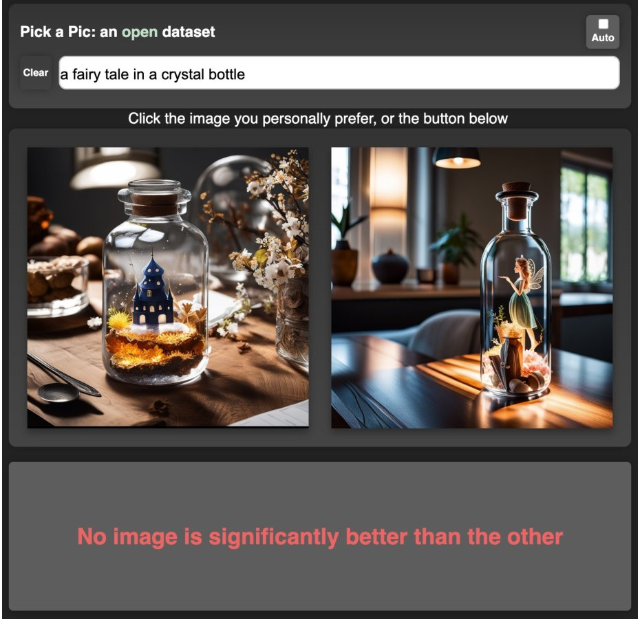
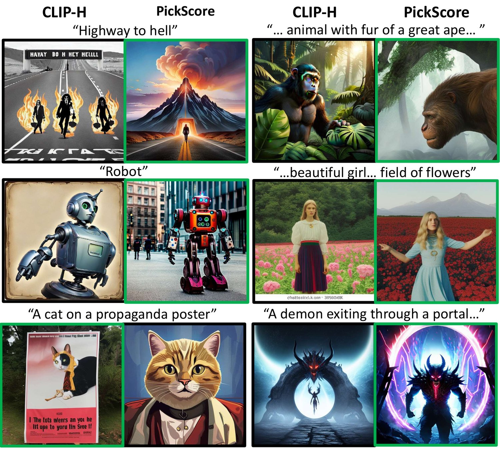
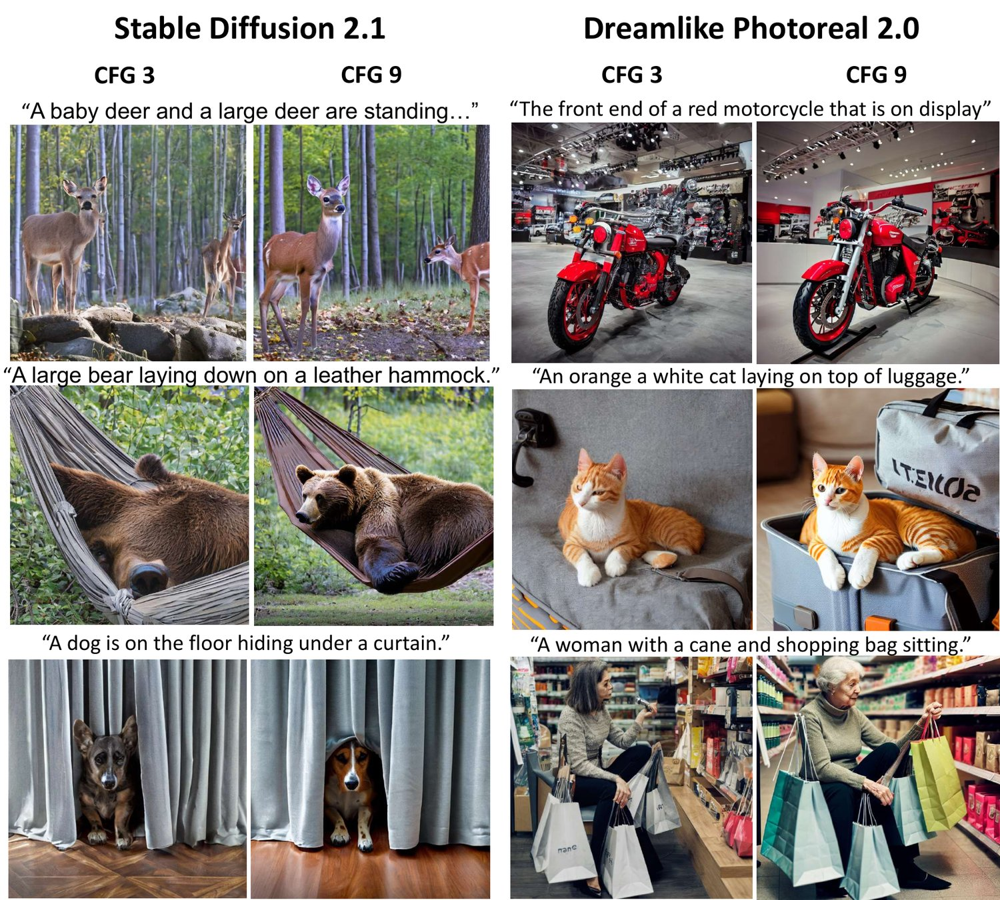
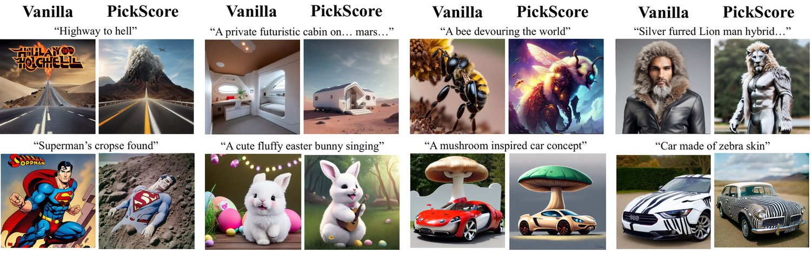

Pick-a-Pic: An Open Dataset of User Preferences for Text-to-Image Generation
The ability to collect a large dataset of human preferences from text-to-image users is usually limited to companies, making such datasets inaccessible to the public. To address this issue, we create a web app that enables text-to-image users to generate images and specify their preferences. Using this web app we build Pick-a-Pic, a large, open dataset of text-to-image prompts and real users’ preferences over generated images. We leverage this dataset to train a CLIP-based scoring function, PickScore, which exhibits superhuman performance on the task of predicting human preferences. Then, we test PickScore’s ability to perform model evaluation and observe that it correlates better with human rankings than other automatic evaluation metrics. Therefore, we recommend using PickScore for evaluating future text-to-image generation models, and using Pick-a-Pic prompts as a more relevant dataset than MS-COCO. Finally, we demonstrate how PickScore can enhance existing text-to-image models via ranking.11 1 https://github.com/yuvalkirstain/PickScore

图 1：通过本文网页应用生成的图像，左侧为被弃选的图像（已变暗），右侧为用户偏好的图像。
Recent advances in aligning language models with user behaviors and expectations have placed a significant emphasis on the ability to model user preferences [10, 1, 3]. However, little attention has been paid to this ability in the realm of text-to-image generation. This lack of attention can largely be attributed to the absence of a large and open dataset of human preferences over state-of-the-art image generation models.
近来，使语言模型与用户行为和期望相对齐的研究进展，把建模用户偏好的能力推到了重要位置[10, 1, 3]。然而在文本到图像生成领域，这一能力得到的关注很少。究其原因，主要在于缺少一个面向最先进图像生成模型、规模大且开放的人类偏好数据集。
To fill this void, we create a web application that enables users to generate images using state-of-the-art text-to-image models while specifying their preferences. With explicit consent from the users, we collect their prompts and preferences to create Pick-a-Pic, a publicly available dataset comprising over half-a-million examples of human preferences over model-generated images.22 2 We recently open-sourced a new version of the Pick-a-Pic dataset that has more than one million examples. Each example in our dataset includes a prompt, two generated images, and a label indicating the preferred image, or a tie when no image is significantly preferred over the other. Notably, Pick-a-Pic was created by real users with a genuine interest in generating images. This interest differs from that of crowd workers who lack the intrinsic motivation to produce creative prompts or the original intent of the prompt’s author to judge which image better aligns with their needs.
为填补这一空白，我们开发了一个网页应用，用户既可用最先进的文本到图像模型生成图像，又能指定自己的偏好。在获得用户明确同意后，我们收集其提示词与偏好，构建了 Pick-a-Pic——一个公开数据集，包含超过 50 万条针对模型生成图像的人类偏好样本（我们最近开源了 Pick-a-Pic 的新版本，样本量已超过一百万条）。每条样本包括一个提示词、两幅生成图像，以及一个标明偏好哪幅图像的标签；若两幅图像之间没有显著优劣，则标记为平局。值得指出的是，Pick-a-Pic 由真正有生成图像兴趣的真实用户创建。这一点与众包标注者不同：后者既缺乏创作有创意提示词的内在动机，也不具备提示词作者本人判断哪幅图像更符合其需求的原始意图。
Tapping into authentic user preferences allows us to train a scoring function that estimates the user’s satisfaction from a particular generated image given a prompt. To train such a scoring function we finetune CLIP-H [12, 7] using human preference data and an analogous objective to that of InstructGPT’s reward model [10]. This objective aims to maximize the probability of a preferred image being picked over an unpreferred one, or even the probability in cases of a tie. We find that the resulting scoring function, PickScore 33 3 The model is available at https://huggingface.co/yuvalkirstain/PickScore_v1, achieves superhuman performance in the task of predicting user preferences (a 70.5% accuracy rate, compared to humans’ 68.0%), while zero-shot CLIP-H (60.8%) and the popular aesthetics predictor [14] (56.8%) perform closer to chance (56.8%).
借助真实的用户偏好，我们可以训练一个评分函数，估计用户在给定提示词下对某幅生成图像的满意度。具体做法是用人类偏好数据、以与 InstructGPT 奖励模型[10]类似的目标微调 CLIP-H [12, 7]。该目标旨在最大化偏好图像相对非偏好图像被选中的概率，在平局情形下则最大化平局的概率。我们发现，所得评分函数 PickScore（模型见 https://huggingface.co/yuvalkirstain/PickScore_v1）在预测用户偏好这一任务上达到超人性能（准确率 70.5%，人类为 68.0%），而零样本的 CLIP-H（60.8%）与流行的美学预测器[14]（56.8%）则接近随机（56.8%）。
Equipped with a dataset for human preferences and a state-of-the-art scoring function, we propose updating the standard protocol for evaluating text-to-image generation models. First, we suggest that researchers evaluate their text-to-image models using prompts from Pick-a-Pic, which better represent what humans want to generate than mundane captions, such as those found in MS-COCO [2, 9]. Second, to compare PickScore with FID, we conduct a human evaluation study and find that even when evaluated against MS-COCO captions, PickScore exhibits a strong correlation with human preferences (0.917), while ranking with FID yields a negative correlation (-0.900). Importantly, we also compare PickScore with other evaluation metrics using model rankings inferred from real user preferences. We observe that PickScore is more strongly correlated with ground truth rankings, as determined by real users, than other evaluation metrics. Thus, we recommend using PickScore as a more reliable evaluation metric than existing ones.
有了人类偏好数据集和最先进的评分函数，我们提出更新文本到图像生成模型的标准评测流程。首先，建议研究者用 Pick-a-Pic 的提示词来评测文生图模型，这些提示词比 MS-COCO [2, 9] 中那些平淡的字幕式描述更能代表人类真正想生成的内容。其次，为把 PickScore 与 FID 作比较，我们开展了一项人类评估研究，发现即便在 MS-COCO 字幕上评测，PickScore 仍与人类偏好强相关（0.917），而用 FID 排序则呈负相关（-0.900）。我们还用由真实用户偏好推断出的模型排序，把 PickScore 与其他评测指标作了比较，观察到 PickScore 与真实用户确定的排序相关性更强。因此我们推荐用 PickScore 作为比现有指标更可靠的评测指标。
Finally, we explore how PickScore can improve the quality of vanilla text-to-image models via ranking. To accomplish this, we generate images with different initial random noises as well as different templates (e.g. “breathtaking [prompt]. award-winning, professional, highly detailed”) to slightly alter the user prompt. We then test the impact of selecting the top image according to different scoring functions. Our findings indicate that human raters prefer images selected by PickScore more than those selected by CLIP-H [7] (win rate of 71.3%), an aesthetics predictor [14] (win rate of 85.1%), and the vanilla text-to-image model (win rate of 71.4%).
最后，我们探索 PickScore 如何通过排序提升原始文生图模型的生成质量。为此，我们用不同的初始随机噪声以及不同的模板（例如“breathtaking [prompt]. award-winning, professional, highly detailed”）来略微改写用户提示词，据此生成多组图像，然后检验按不同评分函数挑选最优图像所带来的影响。结果表明，相比 CLIP-H [7]（胜率 71.3%）、美学预测器[14]（胜率 85.1%）以及原始文生图模型（胜率 71.4%）选出的图像，人类评分者更偏好 PickScore 选出的图像。
In summary, the presented work addresses a gap in the field of text-to-image generation by creating a large, open, high-quality dataset of human preferences over user-prompted model-generated images. We demonstrate the potential of this dataset by training a scoring function, PickScore, which exhibits a performance superior to any other publicly-available automatic scoring function, in predicting human preferences, evaluating text-to-image models, and improving them via ranking. We encourage the research community to adopt Pick-a-Pic and PickScore as a basis for further advances in text-to-image modeling and incorporating human preferences into the learning process.
综上，本文针对文本到图像生成领域的一项空白，构建了一个大规模、开放、高质量的人类偏好数据集，覆盖用户自主提示下由模型生成的图像。我们通过训练评分函数 PickScore 展示了该数据集的潜力：在预测人类偏好、评测文生图模型以及通过排序改进模型这三个方面，PickScore 的性能都优于任何其他公开的自动评分函数。我们呼吁研究界采用 Pick-a-Pic 与 PickScore，作为推进文本到图像建模、并把人类偏好纳入学习过程的基础。

(a)

(b)

(c)
图 2：Pick-a-Pic 数据在应用中的采集流程：(a) 用户先写下一段描述，收到两幅图像；(b) 用户作出偏好判断；(c) 被弃选的图像被一幅新生成的图像替换。该流程不断重复，直到用户更换提示词。
The Pick-a-Pic dataset44 4 The dataset is available at https://huggingface.co/datasets/yuvalkirstain/pickapic_v1, and its updated version is available at https://huggingface.co/datasets/yuvalkirstain/pickapic_v2. was created by logging user interactions with the Pick-a-Pic web application for text-to-image generation. Overall, the Pick-a-Pic dataset contains over 500,000 examples and 35,000 distinct prompts. Each example contains a prompt, two generated images, and a label for which image is preferred, or if there is a tie when no image is significantly preferred over the other. The images in the dataset were generated by employing multiple backbone models, namely, Stable Diffusion 2.1, Dreamlike Photoreal 2.055 5 Dreamlike Photoreal 2.0 is a finetuned version of Stable Diffusion 1.5, and Stable Diffusion XL variants [13] while sampling different classifier-free guidance scale values [6]. As we continue with our efforts to collect more user interactions through the Pick-a-Pic web app and decrease the number of NSFW examples included in the dataset, we will periodically upload new revisions of the dataset.
Pick-a-Pic 数据集（数据集见 https://huggingface.co/datasets/yuvalkirstain/pickapic_v1，更新版本见 https://huggingface.co/datasets/yuvalkirstain/pickapic_v2）通过记录用户与 Pick-a-Pic 文生图网页应用的交互而构建。总体而言，Pick-a-Pic 数据集包含超过 500,000 条样本和 35,000 个不同的提示词。每条样本包含一个提示词、两幅生成图像，以及标明偏好哪幅图像的标签；若两幅图像之间没有显著优劣，则标记为平局。数据集中的图像由多个骨干模型生成，即 Stable Diffusion 2.1、Dreamlike Photoreal 2.0（Dreamlike Photoreal 2.0 是 Stable Diffusion 1.5 的微调版本）以及 Stable Diffusion XL 的若干变体[13]，并采样不同的无分类器引导尺度值[6]。我们将继续通过 Pick-a-Pic 网页应用收集更多用户交互，并减少数据集中 NSFW 样本的数量，同时定期上传数据集的新版本。
To ensure maximum accessibility for a wide range of users, the user interface was designed with simplicity in mind. The application allows users to write creative prompts and generate images. At each turn, the user is presented with two generated images (conditioned on their prompt), and asked to select their preferred option or indicate a tie if they have no strong preference. Upon selection, the rejected (non-preferred) image is replaced with a newly generated image, and the process repeats. The user can also clear or edit the prompt at any time, and the app will generate new images appropriately. Figure 2 illustrates the usage flow.
为了让尽可能广泛的用户都能方便使用，界面设计以简洁为原则。应用允许用户撰写富有创意的提示词并生成图像。每一轮，用户会看到两幅以该提示词为条件生成的图像，并被要求选出自己偏好的一幅；若没有明显偏好，可选择平局。作出选择后，被弃选（非偏好）的图像会被一幅新生成的图像替换，过程继续。用户也可以随时清空或编辑提示词，应用会相应地生成新的图像。图 2 展示了使用流程。
A key advantage of Pick-a-Pic is that our data is collected from real, intrinsically-motivated users, rather than paid crowd workers. We achieve this by approaching a wide audience through various social media channels such as Twitter, Facebook, Discord, and Reddit. At the same time, we mitigate the risk of collecting low-quality data resulting from potential misuse of the application by implementing several quality control measures. First, users are required to authenticate their identity using either a Gmail or a Discord account.66 6 All users provide explicit consent to share their interactions with Pick-a-Pic’s application as part of a public dataset. To ensure privacy, we anonymize user IDs. Second, we closely monitor user activity logs and take action to ban users who generate NSFW content, use multiple instances of the web app simultaneously, or make judgments at an unreasonably fast pace. Third, we use a list of NSFW phrases to prevent users from generating harmful content. Last, we limit users to 1000 interactions and periodically increase the limit. These measures work in tandem to ensure the integrity and reliability of Pick-a-Pic’s data.
Pick-a-Pic 的一项关键优势在于，数据来自有内在动机的真实用户，而非付费的众包标注者。为此我们通过 Twitter、Facebook、Discord 和 Reddit 等多种社交媒体渠道面向广泛人群推广。同时，我们实施了若干质量控制措施，以降低应用被滥用而产生低质数据的风险。第一，用户必须通过 Gmail 或 Discord 账号完成身份认证（所有用户都明确同意将其与 Pick-a-Pic 应用的交互作为公开数据集的一部分共享；为保护隐私，我们对用户 ID 做了匿名化处理）。第二，我们密切监控用户活动日志，并对生成 NSFW 内容、同时开启多个网页应用实例、或以不合理的高速作出判断的用户采取封禁措施。第三，我们使用一份 NSFW 词组清单来阻止用户生成有害内容。最后，我们把每个用户的交互次数限制为 1000 次，并定期提高该上限。这些措施共同保障了 Pick-a-Pic 数据的完整性与可靠性。
While piloting the web app, we experimented with different annotation strategies to optimize for data quality, efficiency of collection, and user experience. Specifically, we tested the following annotation options: (1) 4 images, no ties; (2) 2 images, no ties; (3) 2 images, with ties. We found that the latter option (2 images, with ties) exceeds the other two in terms of user engagement and inter-rater agreement.
在试运行网页应用期间，我们尝试了不同的标注策略，以在数据质量、采集效率和用户体验之间取得最优平衡。具体地，我们测试了以下三种标注选项：(1) 4 幅图像，不允许平局；(2) 2 幅图像，不允许平局；(3) 2 幅图像，允许平局。我们发现最后一种（2 幅图像、允许平局）在用户参与度和标注者间一致性两方面都优于另外两种。
When processing the collected interactions, we filter prompts with NSFW phrases and banned users. We acknowledge that there are still NSFW images and prompts, and will periodically attempt to update the dataset and reduce such occurrences. To divide the dataset into training, validation, and testing subsets, we first sample one thousand prompts, ensuring that each prompt was created by a unique user. Next, we randomly divide those prompts into two sets of equal size to create the validation and test sets. We then sample exactly one example for each prompt to include in these sets. For the training set, we include all examples that do not share a prompt with the validation and test sets. This approach ensures that no split shares prompts with another split, and the validation and test sets do not suffer from being non-proportionally fitted to a specific prompt or user.
处理采集到的交互数据时，我们过滤掉含 NSFW 词组的提示词以及被封禁的用户。我们也承认数据集中仍存在 NSFW 图像和提示词，并将定期尝试更新数据集、减少这类情况。为把数据集划分为训练、验证和测试子集，我们先采样一千个提示词，确保每个提示词来自不同用户；再把它们随机分成两个等大的集合，分别构成验证集和测试集；然后为每个提示词恰好采样一条样本放入这两个集合。训练集则包含所有与验证集、测试集不共享提示词的样本。这种做法保证了任意两个划分之间不共享提示词，也避免验证集和测试集过度拟合某个特定提示词或用户。
Since the creation of the Pick-a-Pic web app we have gathered 968,965 rankings which originated from 66,798 prompts and 6,394 users. However, as the Pick-a-Pic dataset is constantly updating, the reported experiments in this paper involve an NSFW filtered and not fully updated version of Pick-a-Pic, that contains 583,747 training examples, and 500 validation and test examples. The training set of this dataset contains 37,523 prompts from 4,375 distinct users.
自 Pick-a-Pic 网页应用上线以来，我们已收集 968,965 次排序，来自 66,798 个提示词和 6,394 名用户。不过由于 Pick-a-Pic 数据集在持续更新，本文报告的实验使用的是经过 NSFW 过滤、尚未完全更新的版本，含 583,747 条训练样本，以及各 500 条验证和测试样本。该数据集的训练集包含来自 4,375 名不同用户的 37,523 个提示词。
The Pick-a-Pic dataset offers a unique opportunity for a model selection and evaluation methodology, leveraging users’ preferences for unbiased analysis. To illustrate this opportunity, we use the collected data and analyze the impact of changing the classifier-free guidance scale of Stable Diffusion XL (Alpha variant) on its performance. Specifically, we compare human preferences made when both images were generated by Stable Diffusion XL (Alpha variant) but using different classifier-free guidance scales77 7 The frequency of different guidance scales is similar.. For each scale, we compute the win ratio, representing the percentage of judgments where its use led to a preferred image. We also calculate the corresponding tie and lose ratios for each scale, enabling a detailed analysis of which classifier-free guidance scales are more effective. Our results are depicted in Figure 3 (a), and verify for example, that a guidance scale of usually yields preferred images when compared to a guidance scale of .
Pick-a-Pic 数据集为模型选择与评测提供了一种独特的方法论：借助用户偏好做无偏分析。为展示这一机会，我们用所采集的数据分析改变 Stable Diffusion XL（Alpha 变体）的无分类器引导尺度对其性能的影响。具体地，我们比较两幅图像均由 Stable Diffusion XL（Alpha 变体）生成、但使用了不同无分类器引导尺度时用户给出的偏好（各引导尺度出现的频次相近）。对每个尺度，我们计算胜率，即使用该尺度导致图像被偏好的判断占比；同时计算相应的平局率与负率，从而细致分析哪些无分类器引导尺度更有效。结果见图 3(a)，例如可验证 的引导尺度相比 通常能产生更受偏好的图像。
Furthermore, by examining user preferences between images generated by different backbone models, we can determine which model is preferred more by users. For instance, considering judgments in which one image was generated by Dreamlike Photoreal 2.0 and the other by Stable Diffusion 2.1, we can evaluate which model is more performant. As shown in fig. 3 (b), users usually prefer Dreamlike Photoreal 2.0 over Stable Diffusion 2.1. We encourage researchers to contact us and include their text-to-image models in the Pick-a-Pic web app for the purpose of model selection and evaluation.
此外，通过考察用户在不同骨干模型生成的图像之间的偏好，我们可以判断哪个模型更受用户青睐。例如，考察一幅由 Dreamlike Photoreal 2.0 生成、另一幅由 Stable Diffusion 2.1 生成的判断，就能评估哪个模型表现更好。如图 3(b) 所示，用户通常更偏好 Dreamlike Photoreal 2.0 而非 Stable Diffusion 2.1。我们欢迎研究者与我们联系，把自己的文生图模型接入 Pick-a-Pic 网页应用，用于模型选择与评测。
(a) Stable Diffusion XL（Alpha）的胜率随无分类器引导尺度的变化。
(b) 比较 Stable Diffusion 2.1 与 Dreamlike Photoreal 2.0 时的偏好分布。
图 3：Pick-a-Pic 数据集使我们能够进行模型选择（a）与模型评测（b）。
One valuable outcome from collecting a large, natural dataset of user preferences is that we can use it to train a function that scores the quality of a generated image given a prompt. We train the PickScore scoring function over Pick-a-Pic by combining a CLIP-style model with a variant of InstructGPT’s reward model objective [10]. PickScore is able to predict user preferences in held-out Pick-a-Pic prompts better than any other publicly-available scoring function, surpassing even expert human annotators (Section 4). Such a scoring function can be of value for various scenarios, such as performing model evaluation (Section 5), increasing the quality of generated images via ranking (Section 6), building better large-scale datasets to improve text-to-image models [14], and improving text-to-image models through weak supervision (e.g. RLHF).
收集大规模自然用户偏好数据集带来的一项有价值成果是：我们可以用它训练一个函数，对给定提示词下生成图像的质量打分。我们把 CLIP 风格的模型与 InstructGPT 奖励模型目标[10]的一个变体结合起来，在 Pick-a-Pic 上训练出评分函数 PickScore。在留出提示词上，PickScore 预测用户偏好的能力优于任何其他公开的评分函数，甚至超过专家级人类标注者（第 4 节）。这样的评分函数在多种场景中都有价值，例如模型评测（第 5 节）、通过排序提升生成图像质量（第 6 节）、构建更大规模的数据集以改进文生图模型[14]，以及通过弱监督（如 RLHF）改进文生图模型。
PickScore follows the architecture of CLIP [12]; given a prompt and an image , our scoring function computes a real number by representing using a transformer text encoder and using a transformer image encoder as -dimensional vectors, and returning their inner product:
PickScore 沿用 CLIP [12] 的结构：给定提示词 和图像 ，我们的评分函数 用 transformer 文本编码器把 、用 transformer 图像编码器把 表示为 维向量，并返回二者的内积，由此得到一个实数：
| (1) |
Where is the learned scalar temperature parameter of CLIP.
其中 是 CLIP 学习得到的标量温度参数。
The input for our objective includes a scoring function , a prompt , two images , and a preference distribution vector , which captures the user’s preference over the two images. Specifically, takes a value of if is preferred, if is preferred, or for ties. Given this input, the objective optimizes the scoring function’s parameters by minimizing the KL-divergence between the preference and the softmax-normalized scores of and :
目标函数的输入包括评分函数 、提示词 、两幅图像 ，以及刻画用户对两幅图像偏好的偏好分布向量 。具体地， 取值为 （当 更受偏好）、（当 更受偏好），平局时取 。给定上述输入，目标函数通过最小化偏好 与 、 经 softmax 归一化后的分数之间的 KL 散度，来优化评分函数的参数：
| (2) |
| (3) |
Since many examples can originate from the same prompt, we mitigate the risk of overfitting to a small set of prompts by applying a weighted average when reducing the loss across examples in the batch. Specifically, we weigh each example in the batch, with an inverse proportion to its prompt frequency in the dataset. This objective is analogous to InstructGPT’s reward model objective [10]. We also experiment with incorporating in-batch negatives into the objective, but find that this yields a less accurate scoring function (see Appendix).
由于许多样本可能来自同一提示词，我们在对批内样本的损失做归约时采用加权平均，以降低对少数提示词过拟合的风险。具体地，批内每个样本的权重与其提示词在数据集中出现的频次成反比。这一目标与 InstructGPT 的奖励模型目标[10]类似。我们也尝试过在目标中加入批内负样本，但发现所得评分函数精度更低（见附录）。
We finetune CLIP-H [7] using our framework88 8 https://github.com/yuvalkirstain/PickScore on the Pick-a-Pic training set. We train the model for 4,000 steps, with a learning rate of 3e-6, a total batch size of 128, and a warmup period of 500 steps, which follows a linearly decaying learning rate; the experiment is completed in less than an hour with 8 A100 GPUs. We did not perform hyperparameter search, which might further improve results. For model selection, we evaluate the model’s accuracy on the validation set (without the option for a tie) in intervals of 100 steps, and keep the best-performing checkpoint.
我们使用自己的框架（https://github.com/yuvalkirstain/PickScore）在 Pick-a-Pic 训练集上微调 CLIP-H [7]。模型训练 4,000 步，学习率 3e-6，总批大小 128，前 500 步为预热期，之后学习率线性衰减；整个实验在 8 块 A100 GPU 上不到一小时即可完成。我们没有做超参数搜索，这或许还能进一步提升结果。模型选择方面，我们每 100 步在验证集上评估一次准确率（不含平局选项），并保留表现最好的检查点。
We first evaluate PickScore on the task it was trained to do: predict human preferences. We find that PickScore outperforms all other baselines, including expert human annotators.
我们首先在 PickScore 被训练去完成的任务——预测人类偏好——上评测它。结果显示，PickScore 优于所有其他基线，包括专家级人类标注者。
To evaluate the ability of models to predict human preferences, we use an adapted accuracy metric that accounts for the possibility of a tie. Our metric assigns one point to the model for predicting the same label as the user, half a point if either label or prediction is a tie (but not both), and zero otherwise.
为评估模型预测人类偏好的能力，我们使用一种改进后的准确率指标，以考虑平局的可能性。该指标在模型预测与用户标签相同时给 1 分；若标签与预测中有一个为平局（但不同时为平局）给 0.5 分；其余情况给 0 分。
Utilizing the notation specified in Section 3, each model requires a tie threshold probability to predict a tied outcome when . To achieve this, we evaluate each model on the validation set using various tie threshold probabilities and subsequently determine the most optimal tie threshold for each model. For human experts, we do not perform tie selection and explicitly allow them to select a tie.
沿用第 3 节的记号，每个模型都需要一个平局阈值概率 ，以便在 时判定为平局。为此，我们在验证集上用不同的平局阈值概率评估各模型，进而为每个模型确定最优的平局阈值。对人类专家则不做阈值选择，明确允许其直接选择平局。
We compare our model with CLIP-H [7], an aesthetics predictor [14] built on top of CLIP-L [12], a random classifier, and human experts.99 9 Throughout this paper, we use friends and colleagues of the authors for expert human annotation. For completeness, we also compare our results with models from concurrent work, namely, HPS [17] and ImageReward [18].
我们把本文模型与 CLIP-H [7]、构建在 CLIP-L [12] 之上的美学预测器[14]、随机分类器以及人类专家作比较（本文全部实验均请作者的亲友与同事担任专家级人类标注者）。为求完整，我们也与同期工作的模型作了比较，即 HPS [17] 与 ImageReward [18]。

图 4：CLIP-H（左）与 PickScore（右）在 Pick-a-Pic 验证集上的分歧示例。人类偏好的图像加了绿色边框。
表 1：Pick-a-Pic 上的定量结果。
(a) Pick-a-Pic 验证集上不同平局阈值下的准确率
(b) Pick-a-Pic 测试集上的性能。
First, we compare the models’ performance on the validation set across different tie thresholds. Figure 4(a) shows that PickScore outperforms the baselines across almost all thresholds, and achieves the highest global score by a wide margin. After selecting the best-performing tie threshold for each model, we use the threshold to evaluate the different models on the test set.
先比较各模型在验证集上不同平局阈值下的性能。图 4(a) 显示，PickScore 在几乎所有阈值下都优于基线，并以大幅优势取得全局最高分。为每个模型选定最优平局阈值后，我们用该阈值在测试集上评测各模型。
Table 4(b) shows that the aesthetics score () and CLIP-H () perform closer to a random chance baseline (), while PickScore ()1010 10 We train PickScore using three different random seeds and report the mean and variance. achieves superhuman performance, as it even outperforms human experts (). It is important to emphasize a core difference between real users that produce the ground truth labels and annotators used to evaluate human performance. The users that produce the ground truth are actual text-to-image users, which have an idea (which may be incomplete) for an image, and invent a prompt (which may lack details) with hope that the resulting image will match their preferences. In contrast, annotators that are used to measure human performance are oblivious to the original user’s context, idea, and motivation. Therefore, superhuman performance on this task means that the model is able to outperform a human annotator that is oblivious to the original user’s context, idea, and motivation. The superhuman performance of PickScore showcases the importance of using real users as ground truth rather than expert annotators when collecting human preferences. Moreover, the relatively modest human performance () on the task, when compared to a random baseline (), shows that predicting human preferences in text-to-image generation is a difficult task for human annotators.
表 4(b) 显示，美学分数（）与 CLIP-H（）接近随机基线（），而 PickScore（，我们用三个不同随机种子训练 PickScore 并报告均值与方差）达到超人性能，甚至超过人类专家（）。这里需要强调产生真实标签的真实用户与用于衡量人类表现的标注者之间的核心差异：产生真实标签的用户是真正的文生图使用者，他们脑中有一个（可能并不完整的）图像构想，写下一个（可能缺少细节的）提示词，希望生成的图像能契合自己的偏好；而用于衡量人类表现的标注者并不了解原始用户的语境、构想与动机。因此，该任务上的超人性能意味着模型能够胜过一位不了解原始用户语境、构想与动机的标注者。PickScore 的超人表现说明，在采集人类偏好时，用真实用户而非专家标注者作为真实标签来源至关重要。此外，人类在该任务上的表现（）相对随机基线（）提升有限，说明预测文生图场景下的人类偏好对人类标注者而言并非易事。
For completeness, we also include the results of concurrent work from HPS [17], which scores 66.7, and ImageReward [18], which scores 61.1; PickScore outperforms both. To further illustrate the differences between CLIP-H and PickScore, we showcase examples of disagreement from the Pick-a-Pic validation set in Figure 4. We notice that PickScore often chooses more aesthetically pleasing images than CLIP-H; at times, at the cost of faithfulness to the prompt.
为求完整，我们也列出同期工作的结果：HPS [17] 得 66.7，ImageReward [18] 得 61.1，PickScore 优于两者。为更直观地展示 CLIP-H 与 PickScore 的差异，我们在图 4 中给出 Pick-a-Pic 验证集上的分歧示例。我们注意到，PickScore 常选出比 CLIP-H 更美观的图像，有时以牺牲对提示词的忠实度为代价。
Despite significant progress in the generative capabilities of text-to-image models, the standard and most popular prompt dataset has remained the Microsoft Common Objects in Context dataset (MS-COCO) [9]. Similarly, the Fréchet Inception Distance (FID) [5] is still the main metric used for model evaluation. In this section, we explain why we recommend researchers to evaluate their models using prompts from Pick-a-Pic rather than (or at least alongside) MS-COCO, and show that when evaluating state-of-the-art text-to-image models, PickScore is more aligned with human judgments than other automatic evaluation metrics.
尽管文生图模型的生成能力已取得显著进展，最标准、最流行的提示词数据集仍是 Microsoft Common Objects in Context 数据集（MS-COCO）[9]；类似地，弗雷歇 inception 距离（FID）[5] 仍是模型评测的主要指标。本节说明为何建议研究者用 Pick-a-Pic 的提示词（至少与 MS-COCO 并用）来评测模型，并表明在评测最先进的文生图模型时，PickScore 比其他自动评测指标更贴合人类判断。
The prompts contained in the MS-COCO dataset are captions of photographs taken by amateur photographers, depicting objects and humans in everyday settings. While certain captions within this dataset may pose a challenge to text-to-image models, it is evident that the scope of interest for text-to-image users extends beyond commonplace objects and humans. Moreover, the main use-case of image generation is arguably to generate fiction, which cannot be captured by camera. By construction, Pick-a-Pic’s prompts are sampled from real users, and thus better represent the natural distribution of text-to-image intents. We therefore strongly advocate that the research community employ prompts from Pick-a-Pic when assessing the performance of text-to-image models.
MS-COCO 数据集中的提示词是业余摄影者拍摄的照片字幕，描绘日常场景中的物体和人物。尽管其中某些字幕对文生图模型仍有挑战，但文生图用户的兴趣范围显然远超寻常的物体与人物。而且，图像生成的主要用途可以说是生成虚构内容，这类内容无法通过相机捕捉。Pick-a-Pic 的提示词天然采样自真实用户，因而更好地代表了文生图意图的自然分布。因此我们强烈主张，研究界在评估文生图模型性能时采用 Pick-a-Pic 的提示词。

图 5：使用相同随机种子和模型、但不同无分类器引导（CFG）尺度生成的图像。尽管高引导尺度会带来更差的 FID，人类通常觉得它比低引导尺度更悦目。
图 6：在 MS-COCO 验证集上，按 FID 与 PickScore 得到的各模型胜率与人类专家结果之间的相关性。
图 7：真实用户的 Elo 评分与 CLIP-H、ImageReward [18]、HPS [17] 和 PickScore 所得 Elo 评分之间的相关性。
The FID metric [5] gauges the degree of resemblance between a set of generated images and a set of authentic images, at the set level. To do so, it first embeds the real and generated images into the feature space of an Inception net [15], and then estimates the mean and covariance of both sets of images and calculates their similarity. FID is thus geared towards measuring the realism of a set of images, but is oblivious to the prompts. In contrast, PickScore provides a per-instance score, and is directly conditioned on the prompt. We thus hypothesize that PickScore will correlate better with human judgements of generation quality.
FID 指标[5]在集合层面衡量一组生成图像与一组真实图像的相似程度。它先把真实图像与生成图像嵌入一个 Inception 网络[15] 的特征空间，再估计两组图像的均值与协方差并计算其相似度。因此 FID 面向的是衡量一组图像的真实感，而不考虑提示词。PickScore 则给出逐样本分数，并直接以提示词为条件。我们由此假设：PickScore 与人类对生成质量的判断相关性更高。
To empirically test our hypothesis with the most “convenient” settings for the FID metric, we select 100 random captions from MS-COCO validation split. For each caption, we generate images from 9 different models based on the same set of prompts, and ask human experts to rank the 9 generated images (with ties), inducing pairwise preferences. Specifically, we use Stable Diffusion 1.5, Stable Diffusion 2.1, and Dreamlike Photoreal 2.0 combined with three different classifier-free guidance scales (3, 6, and 9). We then repeat the labeling process (over the same images) using FID, and PickScore instead of humans to determine preferences. Since FID does not operate on a per-example base, when “labeling” with FID, we simply choose the model that has a lower (better) FID score on MS-COCO.
为在对该指标最“有利”的设置下实证检验这一假设，我们从 MS-COCO 验证集中随机选取 100 条字幕。对每条字幕，用 9 个不同模型基于同一组提示词生成图像，并请人类专家对 9 幅生成图像排序（允许平局），由此导出两两偏好。具体地，我们用 Stable Diffusion 1.5、Stable Diffusion 2.1 和 Dreamlike Photoreal 2.0，分别搭配三种不同的无分类器引导尺度（3、6、9）。随后在同样的图像上重复标注过程，但把人类换成 FID 与 PickScore 来确定偏好。由于 FID 并非逐样本计算，用 FID“标注”时我们直接选择在 MS-COCO 上 FID 更低（更优）的模型。
Figure 6 shows the correlation between model win rates induced by human rankings (horizontal) and model win rates induced by each automatic scoring function. PickScore exhibits a stronger correlation (0.917) with human raters on MS-COCO captions than FID (-0.900), which surprisingly, exhibits a strong negative correlation. As FID is oblivious to the prompt, one would expect zero correlation, and not a strong negative correlation. We hypothesize that this is related to the classifier-free guidance scale hyperparameter – larger scales tend to produce more vivid images (which humans typically prefer), but differ from the distribution of ground truth images in MS-COCO, yielding worse (higher) FID scores. Figure 5 visualizes these differences by presenting pairs of images generated with the same random seed but with different classifier-free guidance (CFG) scales.
图 6 显示了由人类排序导出的模型胜率（横轴）与由各自动评分函数导出的模型胜率之间的相关性。在 MS-COCO 字幕上，PickScore 与人类评分者的相关性（0.917）强于 FID（-0.900）——后者意外地呈现强负相关。由于 FID 不考虑提示词，人们预期的是零相关，而非强负相关。我们推测这与无分类器引导尺度这一超参数有关：尺度越大往往生成更鲜艳的图像（人类通常更偏好），却与 MS-COCO 中真实图像的分布相差更远，导致 FID 更差（更高）。图 5 通过展示用相同随机种子、不同无分类器引导（CFG）尺度生成的图像对，直观呈现了这些差异。
When comparing with evaluation metrics that do not assume a set of ground truth images, we are able to use a more reliable evaluation procedure. In this evaluation procedure, we consider real user preferences rather than human annotators, as well as more models (i.e. more data points). Specifically, we take all the 14,000 collected preferences that correspond to prompts from the Pick-a-Pic test set. This set of examples contains images generated by 45 different models – four different backbone models, each with different guidance scales. We then use these real user preferences to calculate Elo ratings [4] for the different models. Afterward, we repeat the process while replacing the real user preferences with CLIP-H [7], and PickScore predictions. Similarly to Section 4, we also compare against the concurrent work from ImageReward[18] and HPS [17]. Since the Elo rating system is iterative by nature, we repeat the process 50 times. Each time we randomly shuffle the order of examples, and calculate the correlation with human ratings. Finally, for each metric, we output the mean and standard deviation of its 50 corresponding correlations. Figure 7 displays the correlation between real users’ Elo ratings with the different metrics’ rating, showing that PickScore exhibits a stronger correlation () with real users than all other automatic metrics, namely CLIP-H (), ImageReward (), and HPS ().
在与不依赖真实图像集合的评测指标比较时，我们可以采用更可靠的评测流程：用真实用户偏好替代人类标注者，并纳入更多模型（即更多数据点）。具体地，我们取 Pick-a-Pic 测试集提示词对应的全部 14,000 条已采集偏好。这批样本包含由 45 个不同模型生成的图像——四个不同的骨干模型，各自搭配不同的引导尺度。随后我们利用这些真实用户偏好计算各模型的 Elo 评分[4]；再把真实用户偏好分别替换为 CLIP-H [7] 与 PickScore 的预测，重复该过程。与第 4 节类似，我们也与同期工作的 ImageReward[18] 和 HPS [17] 作比较。由于 Elo 评分系统本质上是迭代式的，我们把该过程重复 50 次：每次随机打乱样本顺序，并计算与人类评分的相关性。最后对每个指标输出其 50 次相关性的均值与标准差。图 7 展示了真实用户 Elo 评分与各指标评分之间的相关性：PickScore（）与真实用户的相关性强于所有其他自动指标，即 CLIP-H（）、ImageReward（）与 HPS（）。
Another possible application for scoring functions is improving the performance of generations made by text-to-image models through ranking: generate a sample of images, and select the one with the highest score. To test this approach, we generate one hundred images for each prompt of the one hundred prompts we take from the Pick-a-Pic test set. We generate the images with Dreamlike Photoreal 2.0, using a classifier-free guidance scale of 7.5, and to increase image diversity, we use 5 initial random noises and 20 different prompt templates. These templates include the null template “[prompt]” and other templates like “breathtaking [prompt]. award-winning, professional, highly detailed”. From each set of 100 generated images, we select the best one according to PickScore, CLIP-H, the aesthetics score, or randomly; in addition, we randomly select one image from the null template for control. We then ask expert human annotators to compare PickScore’s chosen image to each of the other functions’ choices, and decide which one they prefer.
评分函数的另一类应用是通过排序提升文生图模型的生成表现：先采样一批图像，再选出分数最高的那幅。为检验这一思路，我们从 Pick-a-Pic 测试集中取 100 个提示词，为每个提示词生成 100 幅图像。生成使用 Dreamlike Photoreal 2.0，无分类器引导尺度为 7.5；为增加图像多样性，我们使用 5 个初始随机噪声和 20 种不同的提示词模板。这些模板包括空模板“[prompt]”，以及“breathtaking [prompt]. award-winning, professional, highly detailed”之类的模板。对每组 100 幅生成图像，我们分别按 PickScore、CLIP-H、美学分数或随机选出最优的一幅；此外，作为对照，从空模板生成的图像中随机选一幅。随后请专家级人类标注者把 PickScore 选出的图像与各其他函数选出的图像两两比较，判断更偏好哪一幅。
表 2：从 100 幅图像中挑选 1 幅时，人类更偏好 PickScore 的选择而非另一评分函数所选图像的样本占比。
Table 2 shows that PickScore consistently selects more preferable images than the baselines. By manually analyzing some examples, we find that PickScore typically selects images that are both more aesthetic and better aligned with the prompt. We also measure this explicitly by using the aesthetic scoring function instead of a human rater when comparing PickScore’s choice to CLIP-H’s, and find that for 68.5% of the prompts, PickScore selects an image with a higher aesthetic score. Likewise, when comparing PickScore to the aesthetic scorer, 90.5% of PickScore’s choices have a higher CLIP-H text-alignment score than the images chosen by the aesthetic scorer. Figure 8 visualizes the benefits of selecting images with PickScore.
表 2 显示，PickScore 稳定地选出比基线更受偏好的图像。人工分析若干示例后我们发现，PickScore 选出的图像通常既更美观，又与提示词更契合。我们也用美学评分函数代替人类评分者，对 PickScore 与 CLIP-H 的选择作量化比较，发现在 68.5% 的提示词上，PickScore 选出的图像美学分数更高。同样地，在 PickScore 与美学评分器的比较中，PickScore 的选择有 90.5% 取得了比美学评分器所选图像更高的 CLIP-H 文本对齐分数。图 8 直观展示了用 PickScore 选图带来的收益。
 |
图 8：原始文生图模型的图像（左）与 PickScore 从 100 次生成中选出的图像（右）对比。
Collecting and learning from human preferences is an active area of research in natural language processing (NLP) [3, 1, 10]. However, in the domain of text-to-image generation, related research questions have received little attention. One notable work that focuses on collecting human judgments in text-to-image generation is the Simulacra Aesthetic Captions (SAC) dataset [11]. This dataset contains almost 200,000 human ratings of generated images. However, unlike Pick-a-Pic which focuses on general user preferences, and allows users to compare between generated images, the human raters of SAC provide an absolute score for the aesthetic quality of the generated images.
收集人类偏好并从中学习，是自然语言处理（NLP）[3, 1, 10] 中一个活跃的研究方向。然而在文本到图像生成领域，相关研究问题得到的关注很少。专注于收集文生图人类判断的知名工作之一是 Simulacra Aesthetic Captions（SAC）数据集[11]，它包含近 200,000 条针对生成图像的人类评分。不过与 Pick-a-Pic 不同——后者关注通用用户偏好，并允许用户在生成图像之间作比较——SAC 的评分者给出的是生成图像美学质量的绝对分数。
There has been some concurrent work that involves collection and learning from human preferences that we describe below. Lee et al. [8] consider three simple categories of challenges (count, color, and background), enumerating through templates (e.g. “[number] dogs”) to synthetically create prompts. Then, they instruct crowd workers to choose if a generated image is good or bad and use the collected 30,000 examples to train a scoring function. In contrast, Pick-a-Pick allows real users to write any prompts they choose, and provide pairwise comparisons between images that yield more than 500,000 examples.
下面介绍若干涉及收集人类偏好并从中学习的同期工作。Lee 等人[8]考虑三类简单挑战（计数、颜色、背景），通过枚举模板（如“[number] dogs”）合成提示词，然后让众包标注者判断生成图像好或坏，并用收集到的 30,000 条样本训练评分函数。相比之下，Pick-a-Pic 允许真实用户撰写任意提示词，并给出图像间的两两比较，从而得到超过 500,000 条样本。
ImageReward [18] selects prompts and images from the DiffusionDB dataset [16], and collects for them image preference ratings via crowd workers. Since they employ crowd workers that lack the intrinsic motivation to select images that they prefer, the authors define criteria to assess the quality of generated images and instruct crowd workers to follow these criteria when ranking images. They use this strategy to collect 136,892 examples which originate from 8,878 prompts. Importantly, they have not publicly released this dataset. For completeness, we tested ImageReward on the Pick-a-Pic dataset and confirmed that PickScore outperforms it.
ImageReward [18] 从 DiffusionDB 数据集[16] 中挑选提示词和图像，并通过众包标注者收集图像偏好评分。由于众包标注者缺乏挑选自己偏好图像的内在动机，作者定义了一套评估生成图像质量的标准，并要求标注者按此标准排序图像。他们用这一策略收集了 136,892 条样本，源自 8,878 个提示词。重要的是，该数据集并未公开发布。为求完整，我们在 Pick-a-Pic 数据集上测试了 ImageReward，证实 PickScore 优于它。
Another concurrent work from Wu et al. [17] collects a dataset of human judgments by scraping about 25,000 human ratings (which include about 100,000 images) from the Discord channel of StabilityAI. Similarly to us, they use an objective analogous to that of InstructGPT to train a scoring function that they name Human Preference Score (HPS). As with ImageReward, we evaluated HPS on Pick-a-Pic and saw that PickScore achieves better performance.
Wu 等人[17] 的另一项同期工作，通过抓取 StabilityAI 的 Discord 频道中约 25,000 条人类评分（涉及约 100,000 幅图像）构建了一个人类判断数据集。与我们类似，他们使用与 InstructGPT 类似的目标训练了一个评分函数，命名为人类偏好分数（HPS）。与 ImageReward 一样，我们在 Pick-a-Pic 上评测了 HPS，发现 PickScore 性能更好。
The observed superior performance of PickScore over the concurrent work from both HPS and ImageReward on the Pick-a-Pic dataset could be attributed to several factors. For example, differences in implementation (e.g., model size, backbone, hyperparameters), differences in the scales of data, or variations in the distribution of data. Notably, Pick-a-Pic is more than five times larger than the data used to train HPS and ImageReward. Furthermore, ImageReward collects judgments from crowd workers, which may lead to significant differences in data distribution. In contrast, HPS scrapes ratings from the StabilityAI discord channel for real text-to-image users but may be more aligned with this more specific distribution of text-to-image users. We leave Isolating and identifying the specific effects of these factors for future work.
在 Pick-a-Pic 数据集上，PickScore 优于 HPS 与 ImageReward 这两项同期工作，其可能原因有多方面，例如实现上的差异（模型规模、骨干网络、超参数）、数据规模的差异，或数据分布的不同。值得注意的是，Pick-a-Pic 的规模是 HPS 与 ImageReward 所用训练数据的五倍以上。此外，ImageReward 从众包标注者处收集判断，可能导致数据分布显著不同；HPS 则从 StabilityAI 的 Discord 频道抓取真实文生图用户的评分，但可能更贴合这一更特定的用户分布。我们把分离并识别这些因素各自的具体影响留作未来工作。
It is important to acknowledge that despite our efforts to ensure data quality (see section 2), some images and prompts may contain NSFW content that could potentially bias the data, and some users may have made judgments without due care. Moreover, the preferences of users may include biases that may be reflected in the collected data. These limitations may affect the overall quality and reliability of the data collected and should be taken into consideration when considering the broader impact of the dataset. Nonetheless, we believe that the advantages of collecting data from intrinsically-motivated users and publicly releasing it will enable the text-to-image community to better align text-to-image models with human preferences.
需要坦承的是，尽管我们已努力保证数据质量（见第 2 节），部分图像和提示词仍可能包含 NSFW 内容，从而给数据带来潜在偏差；部分用户也可能在未经充分考虑的情况下作出判断。此外，用户偏好本身可能含有偏见，并会反映在所采集的数据中。这些局限可能影响所采集数据的整体质量与可靠性，在考量数据集的更广泛影响时应予以考虑。尽管如此，我们相信，从有内在动机的用户处采集数据并将其公开发布，其收益将使文生图社区能够把文生图模型与人类偏好对得更齐。
We build a web application that serves text-to-image users and (willingly) collects their preferences. We use the collected data and present the Pick-a-Pic dataset: an open dataset of over half-a-million examples of text-to-image prompts, generated images, and user-labeled preferences. The quantity and quality of the data enables us to train PickScore, a state-of-the-art text-image scoring function, which achieves superhuman performance when predicting user preferences. PickScore aligns better with human judgements than any other publicly-available automatic metric, and together with Pick-a-Pic’s natural distribution prompts, enables much more relevant text-to-image model evaluation than existing evaluation standards, such as FID over MS-COCO. Finally, we demonstrate the effectiveness of using our scoring function for selecting images in improving the quality of text-to-image models. There are still many opportunities for building upon Pick-a-Pic and PickScore, such as RLHF and other alignment approaches, and we are excited to see how the research community will utilize this work in the near future.
我们构建了一个服务文生图用户、并（在自愿前提下）收集其偏好的网页应用。基于所采集的数据，我们发布了 Pick-a-Pic 数据集：一个包含超过五十万条文生图提示词、生成图像和用户标注偏好的开放数据集。数据的体量与质量使我们得以训练出最先进的图文评分函数 PickScore，它在预测用户偏好时达到超人性能。PickScore 与人类判断的贴合程度优于任何其他公开的自动指标；再结合 Pick-a-Pic 的自然分布提示词，它使文生图模型评测比现有评测标准（例如 MS-COCO 上的 FID）更具参考价值。最后，我们证明了用该评分函数挑选图像能有效提升文生图模型的生成质量。在 Pick-a-Pic 与 PickScore 之上仍有大量可供拓展的方向，例如 RLHF 及其他对齐方法，我们期待研究界在不久的将来如何运用本工作。
We gratefully acknowledge the support of Stability AI, the Google TRC program, and Jonathan Berant, who provided us with invaluable compute resources, credits, and storage that were crucial to the success of this project. We extend our sincerest thanks for their contributions and support. Furthermore, we extend our gratitude to Roni Herman, Or Honovich, Avia Efrat, Samuel Amouyal, Tomer Ronen, Uri Shaham, Maor Ivgi, Itay Itzhak, Illy Sachs, and other friends and colleagues for their contribution to the annotation endeavor of this project.
衷心感谢 Stability AI、Google TRC 项目以及 Jonathan Berant 提供的算力资源、额度与存储支持，这些对本项目的成功至关重要，我们对他们的贡献与支持致以最诚挚的谢意。此外，感谢 Roni Herman、Or Honovich、Avia Efrat、Samuel Amouyal、Tomer Ronen、Uri Shaham、Maor Ivgi、Itay Itzhak、Illy Sachs 以及其他亲友同事在本项目标注工作中的付出。
To illustrate the difference between MS-COCO captions and Pick-a-Pic prompts we show prompts from each dataset.
为说明 MS-COCO 字幕与 Pick-a-Pic 提示词之间的差异，我们给出两个数据集各自的提示词示例。
Pick-a-Pic – “forest with ruins, photo”, “A panda bear as a mad scientist”, “product photo of a sneakers”, “photo of a bicycle, detailed, 8k uhd, dslr, high quality, film grain, Fujifilm XT3”, “female portrait photo”, “Alexander the great, cover art, colorful”, “A galactic eldritch squid towering over the planet Earth, stars, galaxies and nebulas in the background…”, “Portrait of a giant, fluffy, ninja teddy bear”, “insanely detailed portrait, darth vader, shiny, extremely intricate, high res, 8k, award winning”, “Giant ice cream cone melting and creating a river through a city”.
Pick-a-Pic —— “forest with ruins, photo”、“A panda bear as a mad scientist”、“product photo of a sneakers”、“photo of a bicycle, detailed, 8k uhd, dslr, high quality, film grain, Fujifilm XT3”、“female portrait photo”、“Alexander the great, cover art, colorful”、“A galactic eldritch squid towering over the planet Earth, stars, galaxies and nebulas in the background…”、“Portrait of a giant, fluffy, ninja teddy bear”、“insanely detailed portrait, darth vader, shiny, extremely intricate, high res, 8k, award winning”、“Giant ice cream cone melting and creating a river through a city”。
MS-COCO – “A man with a red helmet on a small moped on a dirt road.”, “A woman wearing a net on her head cutting a cake.”, “there is a woman that is cutting a white cake”, “a little boy wearing headphones and looking at a computer monitor”, “A young girl is preparing to blow out her candle.”, “A commercial stainless kitchen with a pot of food cooking.”, “Two men that are standing in a kitchen.”, “A man riding a bike past a train traveling along tracks.”, “The pantry door of the small kitchen is closed.”, “A man is doing a trick on a skateboard”.
MS-COCO —— “A man with a red helmet on a small moped on a dirt road.”、“A woman wearing a net on her head cutting a cake.”、“there is a woman that is cutting a white cake”、“a little boy wearing headphones and looking at a computer monitor”、“A young girl is preparing to blow out her candle.”、“A commercial stainless kitchen with a pot of food cooking.”、“Two men that are standing in a kitchen.”、“A man riding a bike past a train traveling along tracks.”、“The pantry door of the small kitchen is closed.”、“A man is doing a trick on a skateboard”。
We further explored an alternative loss function that is closer to CLIP’s original objective. In this loss function, we also incorporate the remaining examples in the batch as in-batch negatives. To elaborate, considering the notation established in section 3 and denoting the images corresponding to the -th example in the batch, we formulate as follows:
我们进一步探索了一个更接近 CLIP 原始目标的替代损失函数，在该函数中还把批内其余样本作为批内负样本纳入。具体地，沿用第 3 节的记号，并用 表示批中第 个样本对应的图像，我们把 写成如下形式：
| (4) |
We anticipated that this objective function would maintain the general capabilities of CLIP with minimal loss in performance. However, our findings demonstrated that PickScore significantly outperforms this objective function, as the latter only produced a scoring function that achieves an accuracy of 65.2 on the Pick-a-Pic test set.
我们原本预期该目标函数能在性能损失很小的情况下保持 CLIP 的通用能力。然而实验表明 PickScore 显著优于它：后者训练出的评分函数在 Pick-a-Pic 测试集上仅取得 65.2 的准确率。